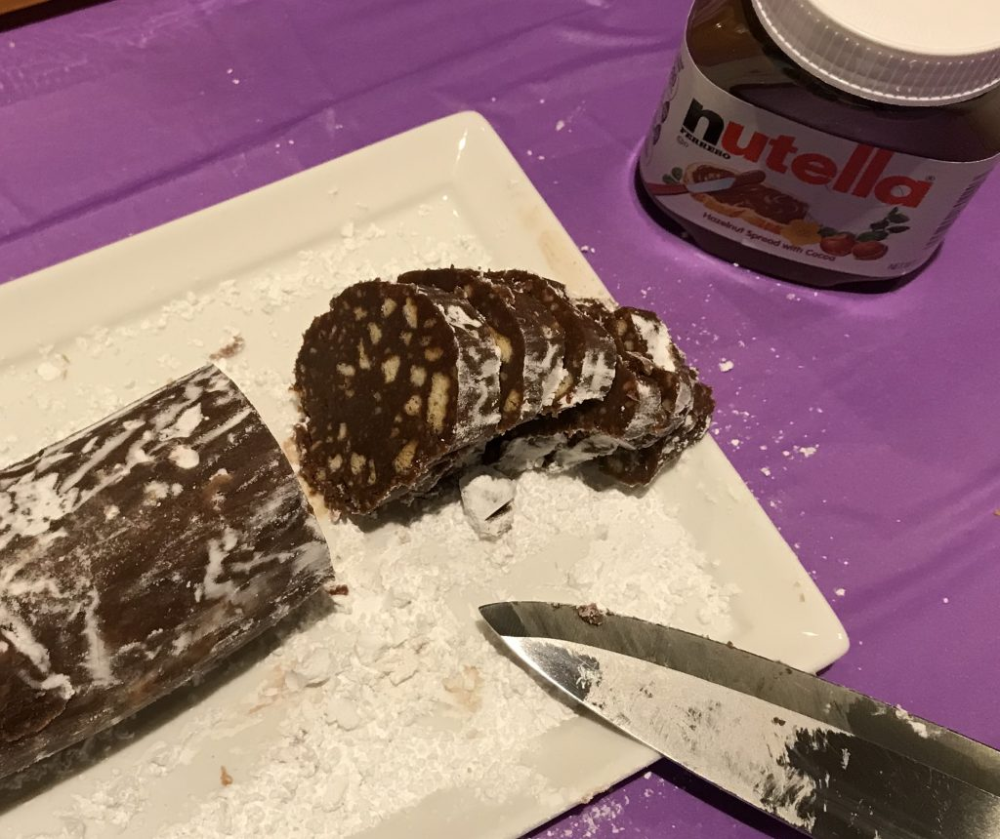
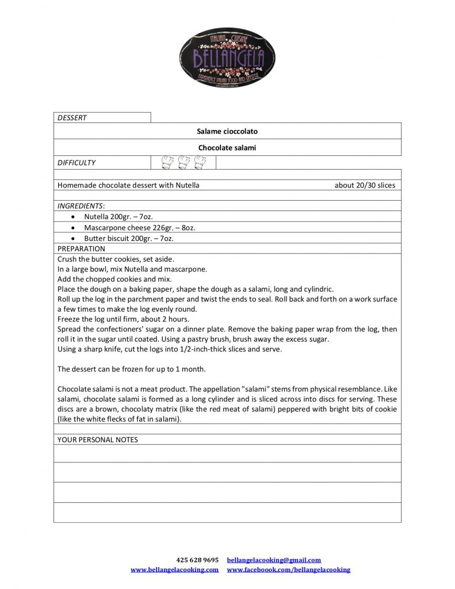

Last week I had the pleasure to attend an event where my Italian friend Angela, an experienced cook, was demonstrating how to make a super easy and most of all a super quick Italian dessert: il salame al cioccolato. As the name suggests, it does look like a salami for its shape, of course, but also for its marbled appearance (by the way, those are crushed cookies not fat!). The best part, besides that it is made with Nutella, is that you can freeze it for up to a month which means that you'd always have a sweet treat ready when your friends come to visit you for an afternoon caffe'. Here's the recipe:
If you live in the Seattle area, Angela will be happy to help you with private hands-on classes, catering, kids classes, and more. Visit her website for more information and to see many photos of her delicious Italian dishes.